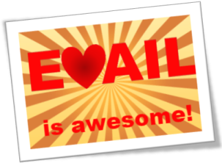

Introduction
OS Laboratory Team
Fall 2018
Different Distribution of Linux
- Elementrary
- Linux mint
- Arch linux
- Ubuntu
- Tail
- Centos
- Ubuntu studio
- Open SUSE
For more information see dstrowatch.com
Basic Definition
- Hot plug
- Cold plug
- Open source
- *nix
Different Parts that Work with Hardware
- HAL
- HAL (Hardware Abstraction Layer or rather Hardware Annotation Library) is a software subsystem for UNIX-like operating systems providing hardware abstraction.
- HAL is now deprecated on most Linux distributions and on FreeBSD. Functionality is being merged into udev on Linux as of 2008–2010 and devd on FreeBSD.
Different Parts that Work with Hardware
- udev
- udev primarily manages device nodes in the /dev directory
- At the same time, udev also handles all user space events raised when hardware devices are added into the system or removed from it, including firmware loading as required by certain devices.
System Information
- /sys
- /proc
- lsusb
- lshw
- lsmod
- rmmod
- modprobe
- /etc/modprobe.d
- blkid
Basic Definition
- Kernel
- init
- pstree
- dmesg
- /var/log/syslog or /var/log/messages
No instant messaging
Email is awesome

Parham
[dot]
Alvani
[at]
gmail
[dot]
com
- Learn elementry bash scripting and commands
- Learn C programming with a little of system programming